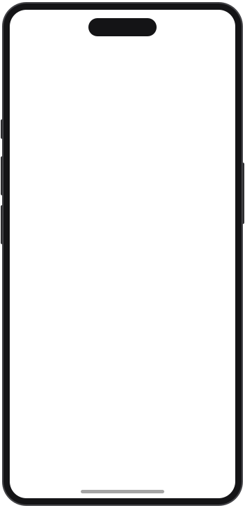
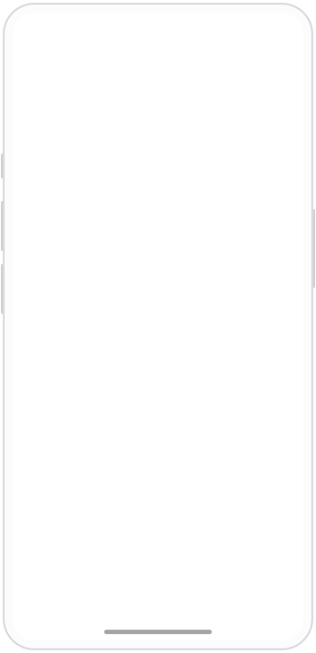
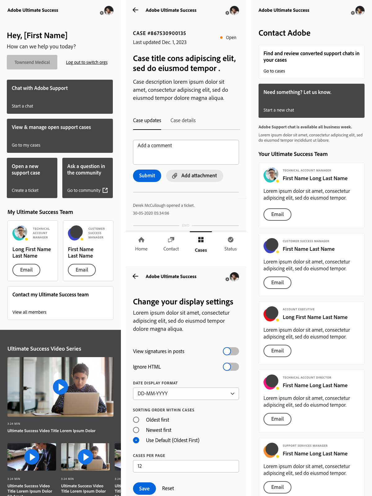
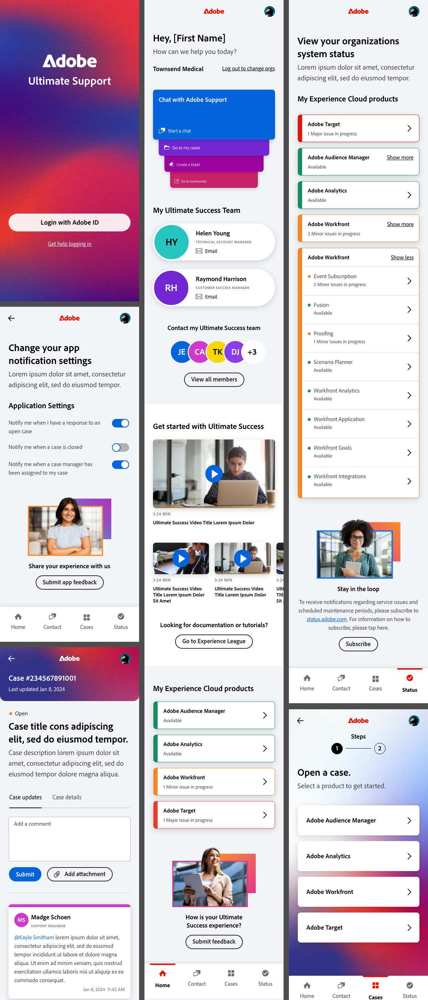

Project 10 / MOBILE APP / 2024
Adobe Ultimate Support
A mobile support app for Adobe's enterprise accounts. One four-tab shell, handed over as a working coded prototype, with the structure settled in wireframes alongside Adobe's team before any brand went near it.

The prototype, in the page
Try it for yourself
This is the real, working prototype, not a recording. Click through the login screen and explore the four-tab shell just as a user would.

Structure settled in grey

Brand on settled bones
